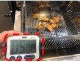
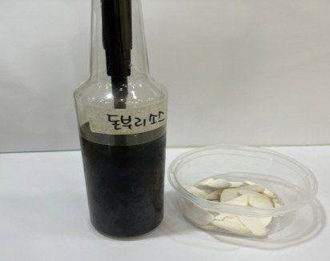
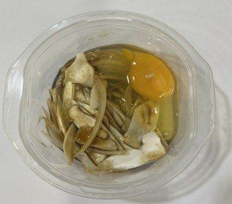
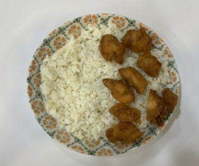
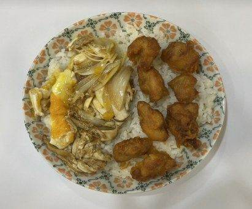
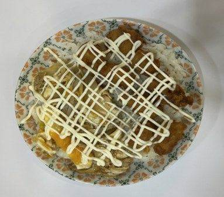
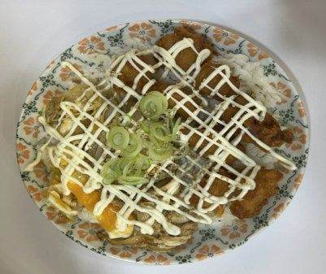
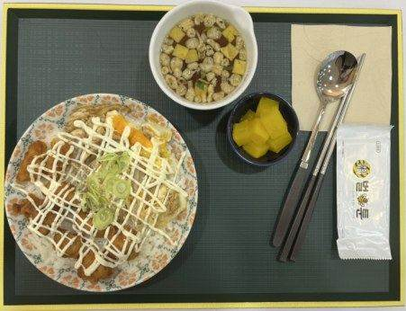

| 메뉴명 | 치킨마요덮밥 |
|---|---|
| 판매가격 | 7,900원 |
| 원재료 | 치킨가라아게, 달큰간장소스, 양파, 대파 새송이버섯, 계란, 마요네즈 |
| 사용 부자재 | 덮밥접시 |
| 메뉴특징 | 바삭한 치킨과 짭잘한 간장소스, 고소한마요네즈, 부드러운 계란까지 함께 들어간 누구나 좋아하는 메뉴 |
조리방법

1
180도 튀김기에 순살치킨 100g(4개)을 넣어 5분간 튀긴 후 기름으 제거한다.
(*덜 익으면 1분 더 튀겨준다.)
180도 튀김기에 순살치킨 100g(4개)을 넣어 5분간 튀긴 후 기름으 제거한다.
(*덜 익으면 1분 더 튀겨준다.)

2
전자레인지 용기에 양파 20g, 미니새송이 20g, 달큰간장소스 4펌프(40g)를 넣고 700W렌지에 1분간 돌린다.
전자레인지 용기에 양파 20g, 미니새송이 20g, 달큰간장소스 4펌프(40g)를 넣고 700W렌지에 1분간 돌린다.

3
렌지 돌린 채소에 계란 1개를 깨서 넣고 다시 렌지에 넣어 1분간 데운다.
(*뜨거우니 화상에 주의한다.)
렌지 돌린 채소에 계란 1개를 깨서 넣고 다시 렌지에 넣어 1분간 데운다.
(*뜨거우니 화상에 주의한다.)

4
접시에 밥 200g을 담고
순살치킨은 반으로 잘라한쪽에
올려준다.
접시에 밥 200g을 담고
순살치킨은 반으로 잘라한쪽에
올려준다.

5
렌지로 조리한 소스를
밥 위에 부어준다.
렌지로 조리한 소스를
밥 위에 부어준다.

6
마요네즈 20g을 지그재그로
뿌려준다.
마요네즈 20g을 지그재그로
뿌려준다.

7
대파 4g을 올리고
깨를 뿌려서 완성한다.
대파 4g을 올리고
깨를 뿌려서 완성한다.

8
단무지, 우동국물과 함께
제공한다.
단무지, 우동국물과 함께
제공한다.
계란이 완전히 익을 정도로 렌지에 돌리지 않는다. (반숙계란)
치킨은 소스 때문에 눅눅해질 수 있으므로 바삭하게 튀겨준다.